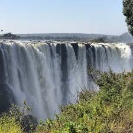

Data
Area: 752,618 sq km
Population: 19,600,000
Capital: Lusaka
Languages: English, Bemba, Nyanja, Tonga, Lozi
Currency: Zambian Kwacha (ZMW)
Time Zone: UTC+2
Calling Code: +260
Internet TLD: .zm
Weather
Temperature:
Conditions: Sunny
Wind:
Wind Chill:
About Zambia
Zambia "nicknamed as the real African" is the home of the mighty Victoria Falls, one of the Seven Natural Wonders of the World. it holds this title for its unspoiled natural beauty, abundant wildlife, and diverse scenery, offering a chance to experience an untouched environment. The nickname reflects the country's temperate climate, numerous lakes and rivers, and its position as a tourist destination with uncrowded, natural surroundings, making it an "air-conditioned state". It is rich in wildlife, culture, and stunning natural landscapes.
